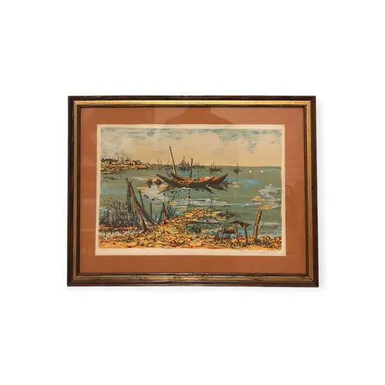
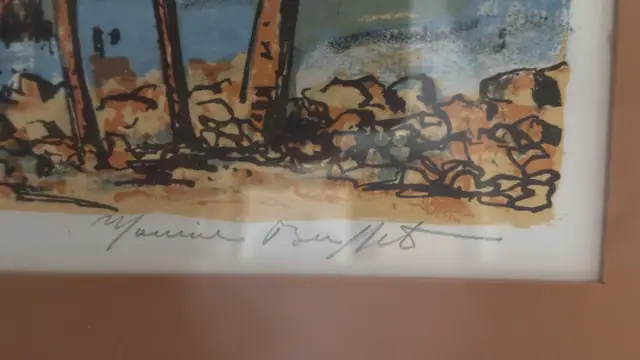
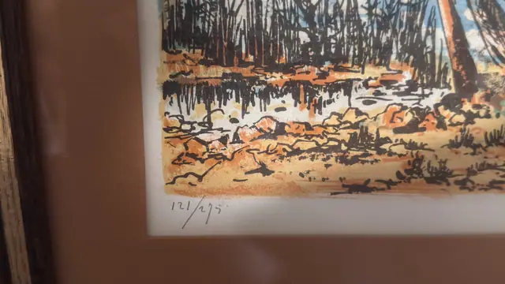
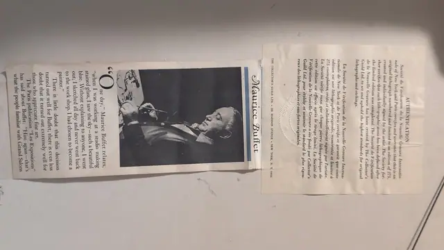

Paintings & Prints
Harbour with Moored Boats, Signed Buffet Lithograph, Maurice Buffet, Numbered Edition, Framed
Maurice Buffet · third quarter of the 20th century
Price Upon Request




About the Item
Maurice Buffet. A colour lithograph of a low, wide coastline: heavy black brush-drawn masts, spars and reeds rise from an ochre foreshore scattered with pebbles, while two dark boats sit on the pale green water. The far shore carries a small pale town under a broad blue-and-cream sky. Drawing is loose and calligraphic, laid over flat washes of turquoise, sand and rust, with the white of the paper left open through the beach. Signed and numbered in pencil in the margin, mounted on a terracotta mat in a dark wood and gilt frame. Medium: colour lithograph on paper, pencil signed and numbered. Signed lower right margin, in pencil, reading "Maurice Buffet". Edition: 121/275. Accompanied by a certificate: Bilingual authentication sheet with a blind seal certifying an original hand-signed lithograph in an edition of 275, stones defaced after printing; supplied with a press clipping about Maurice Buffet. Inscribed on the reverse or mount: Maurice Buffet (pencil signature, lower right margin); 121/275 (pencil, lower left margin); AUTHENTICATION - Société de Vérification de la Nouvelle Gravure Internationale of New York and Paris certifies and warrants that this is an original lithograph numbered and limited to an edition of 275, created and individually signed by the artist. The Society further verifies that each lithographic stone has been defaced after the limited edition was completed. The Société de Vérification de la Nouvelle Gravure has been created by The Collector's Guild Ltd. to set and uphold the highest standards for original lithographs and etchings. (the same text follows in French); THE COLLECTOR'S GUILD LTD. • 180 MADISON AVENUE • NEW YORK, N. Y. 10016. Condition: Print and mat appear clean; the certificate and clipping are creased and lightly toned with a fold across the certificate.
Details
- Creator:
- Maurice Buffet
- Creation Year:
- third quarter of the 20th century
- Dimensions:
- Height: 19.25 in (48.9 cm)
Width: 25.0 in (63.5 cm)
outside of frame - Medium:
- colour lithograph on paper, pencil signed and numbered
- Edition:
- 121/275
- Period:
- 20Th
- Condition:
- Offered in the condition shown in the photographs.
- Reference Number:
- VO-131
- Documentation:
- Bilingual authentication sheet with a blind seal certifying an original hand-signed lithograph in an edition of 275, stones defaced after printing; supplied with a press clipping about Maurice Buffet.
- Gallery Location:
- Maurice Buffet (pencil signature, lower right margin); 121/275 (pencil, lower left margin); AUTHENTICATION - Société de Vérification de la Nouvelle Gravure Internationale of New York and Paris certifies and warrants that this is an original lithograph numbered and limited to an edition of 275, created and individually signed by the artist. The Society further verifies that each lithographic stone has been defaced after the limited edition was completed. The Société de Vérification de la Nouvelle Gravure has been created by The Collector's Guild Ltd. to set and uphold the highest standards for original lithographs and etchings. (the same text follows in French)